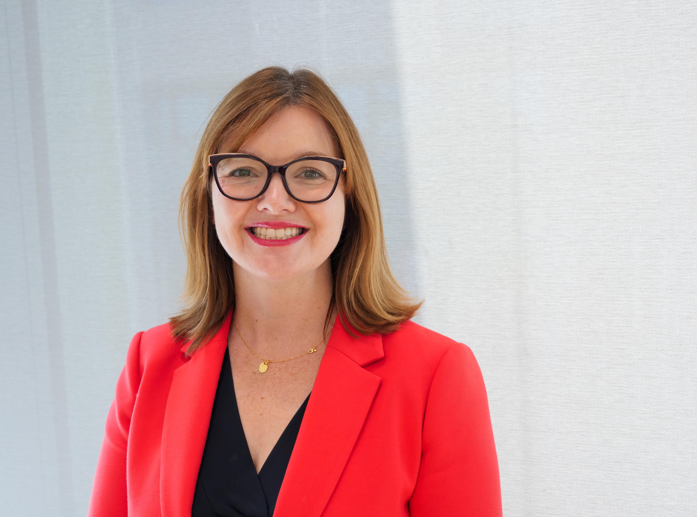

Felicity Oswald

Interim Chief Executive Officer (CEO)
Felicity played a pivotal role in the initial leadership of the NCSC, leading the establishment of its
headquarters, from design to its formal opening. Felicity has been the NCSC's COO since January 2023, and is
currently interim CEO. With a civil service tenure starting in 2005, Felicity has held significant positions
across various governmental sectors, including National Security, Crime and Policing policy making, and Civil
Contingencies.
Paul Chichester

Director of Operations
Paul is Director Operations of the National Cyber Security Centre. He has worked in the UK government
intelligence and security community for over 25 years in a variety of offensive and defensive cyber roles.
Paul was awarded the MBE in 2005 for his ground-breaking work in cyber.
Ollie Whitehouse
Ollie’s career in cyber security has spanned more than 27 years prior to becoming the NCSC's Chief
Technology Officer in late 2023. He has held senior science and technology advisory roles to the UK government
for the last decade, including serving as the current Chair for the DSIT Cyber Technology External Advisory
Group. Prior to joining the NCSC Ollie had an extensive career within the private sector including his most
recent roles as Chief Technical Officer at NCC Group, non-executive Director to PortSwigger and Interrupt Labs
and advisor to 1011 Venture Capital.